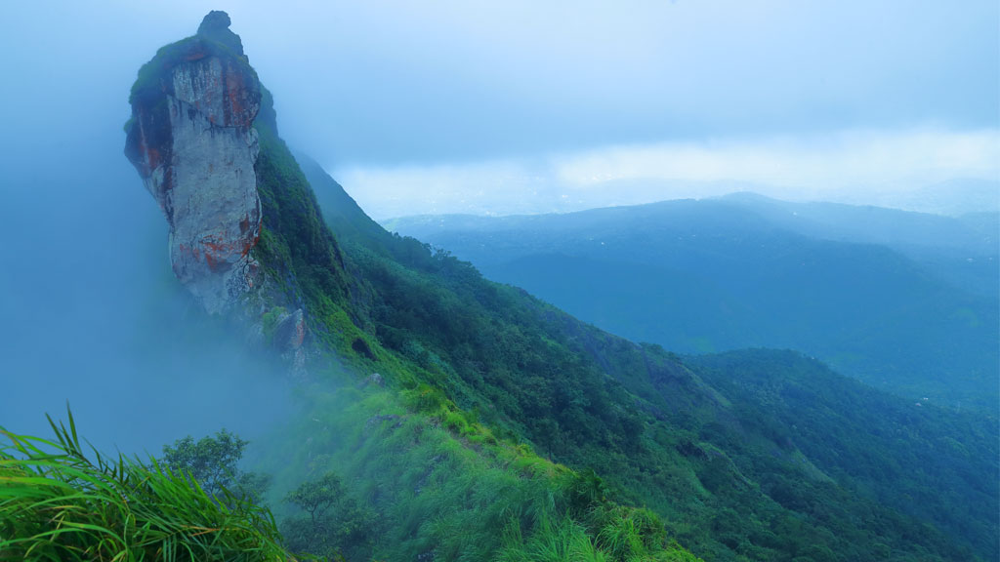

KOTTAYAM - Akshara Nagari(City of Letters) of Kerala
1. ILLIKKAL KALLU

One of the most popular tourist destinations in Kottayam district is Illickal Kallu, situated on a majestic hill called Illickal Mala.
There are numerous mountain streams in Illickal Mala, which is 6,000 ft above sea level, and they flow down to form the serene Meenachil River. Each of the three hills has a peculiar shape. One of them resembles a mushroom and hence, its name ‘Kuda Kallu’ (umbrella-shaped rock). The second hill has a small hunch on the side and is therefore called as ‘Koonu Kallu’ (hunchback rock). The third one is called Illickal Kallu as it derives its name from the mountain itself. The steep rock on the top of the hill has a part of its peak shorn off.
The nearest town is Nellappara (8km) and the nearest major town is Erattupetta (19km). The journey up the hill is in itself an eventful one. After a thrilling drive negotiating hairpin curves and a hike uphill, there is a path that takes you to Illickal Kallu. You may tread this path or just stay put and feel the might of this imposing muscular rock.
The breathtaking aerial view of the surroundings and billows of mists that glide past shrouding the towering hill is sure to overwhelm you. The weather is cool and misty here. If the sky is clear, the Arabian Sea can be seen in the distant horizon as a thin blue line. Sunsets on full moon days are special here. The moon can be seen rising like another sun as the orange sun goes down.

2. ETTUMANOOR MAHADEVA TEMPLE
Ettumanoor Mahadeva temple is one among the 108 Shiva temples in Kerala, located at the southern tip of India. It is renowned for its mural art. The paintings of Lord Nataraja (God of Dance) on the gopuram (temple tower) is one of the main attractions here. Unlike in most other temples, here the idol faces the West.
Situated in Kottayam district, the temple complex dates back to 1542 CE. It attracts large crowds when its annual Ezharaponnana (the seven-and-a-half elephants finished in gold) Ezhunallathu (procession) is held, usually in the month of February.
The fresco painting of the dance of Lord Shiva known as Pradosha Nritham is one of the finest wall paintings seen in the whole country. The main worship here is the lighting of lamps and you can see an ever glowing lamp as soon as you enter the temple. Thulabharam is the important rituals of this temple where devotees make offering from gold to fruits as per their weight for favors received from the god. People here call the deity as Ettumanoorappan. Thiruvadira and eighteen part worship during Shivarathri are the two annual festival of this temple and the most important event is the procession of Ezharaponnana also known as Ezharaponnana ezhunallathu.
3. KUMARAKOM


The village of Kumarakom is a cluster of little islands on the Vembanad Lake, and is part of the Kuttanad region. The bird sanctuary here, which is spread across 14 acres is a favourite haunt of migratory birds and an ornithologist's paradise. Egrets, Darters, Herons, Teals, Waterfowls, Cuckoo, Wild Duck and migratory birds like the Siberian Stork visit here in flocks and fascinate all visitors.
An enchanting backwater destination, Kumarakom offers visitors many other leisure options. Boating and fishing facilities are available at the Taj Garden Retreat, a sprawling old bungalow-turned-resort.
A labyrinth of backwaters with shimmering water, the brilliant green of mangrove forests, coconut palms lining the embankments, blue skies, flocks of migratory birds skimming the water – that is Kumarakom, a veritable dreamland! Every year, more than seven million tourists visit Kerala, a place that the National Geographic Magazine has described as one of the must-see places in a lifetime. Kumarakom is an important stopover for a majority of these tourists. This famous tourist backwater hub is a cluster of islands on the eastern banks of Lake Vembanad. Compared to adjacent villages, the lake has its maximum length and breadth near Kumarakom - about eight km. With the huge lake on one side and with a network of calm canals running through it, Kumarakom, a masterpiece created by man and Nature together, enjoys a unique position on the map of Kerala.